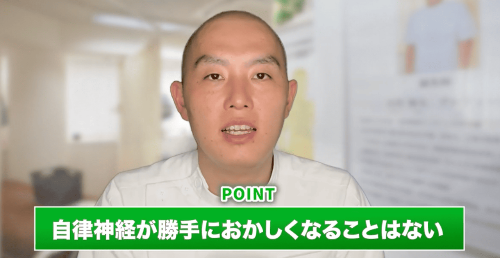
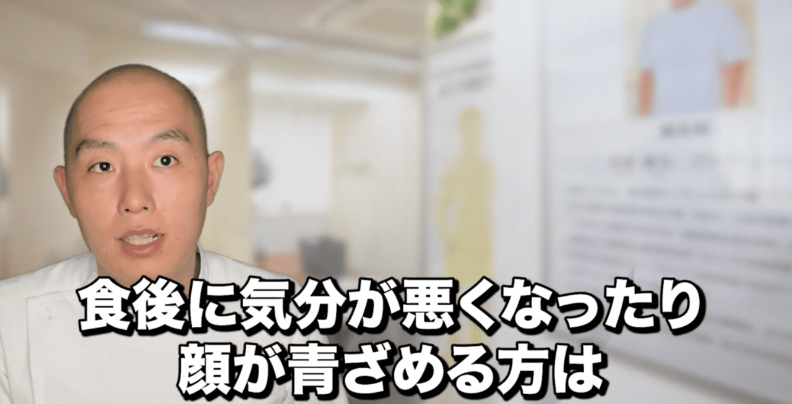
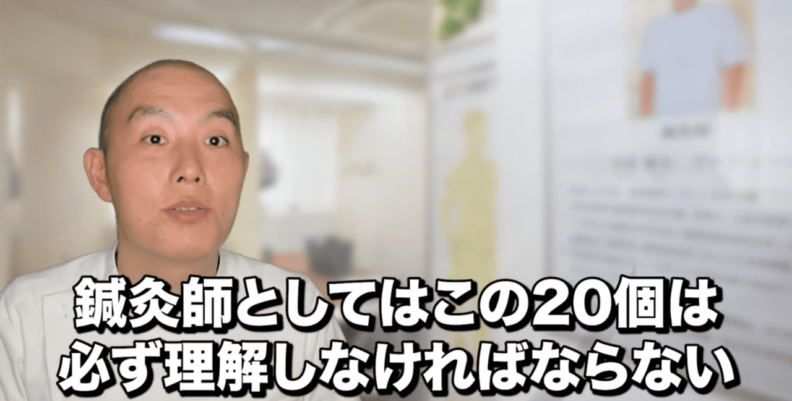
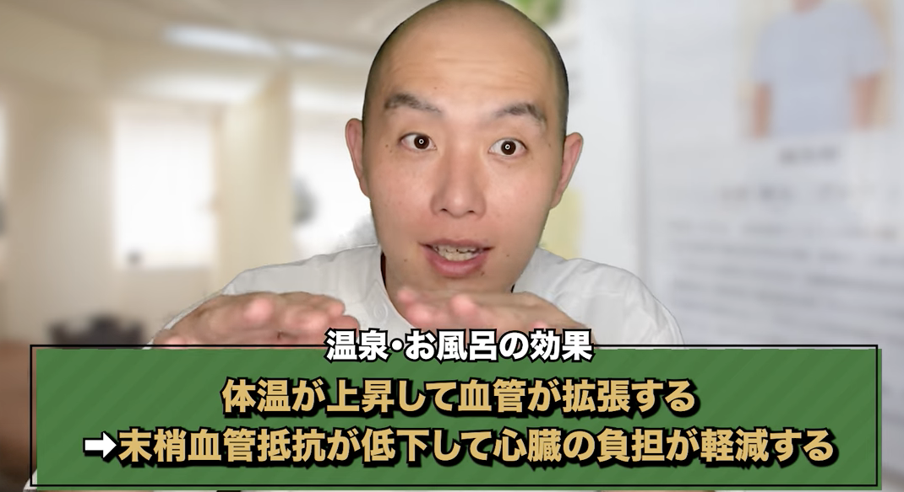
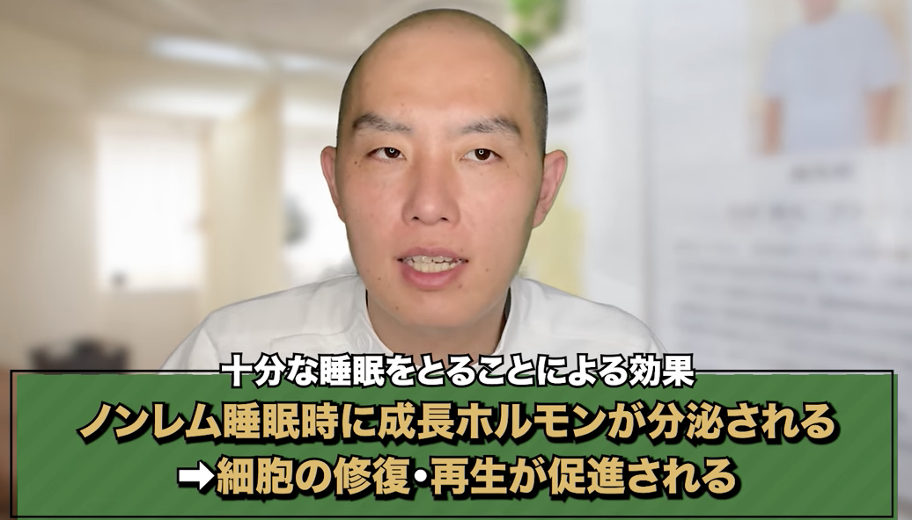
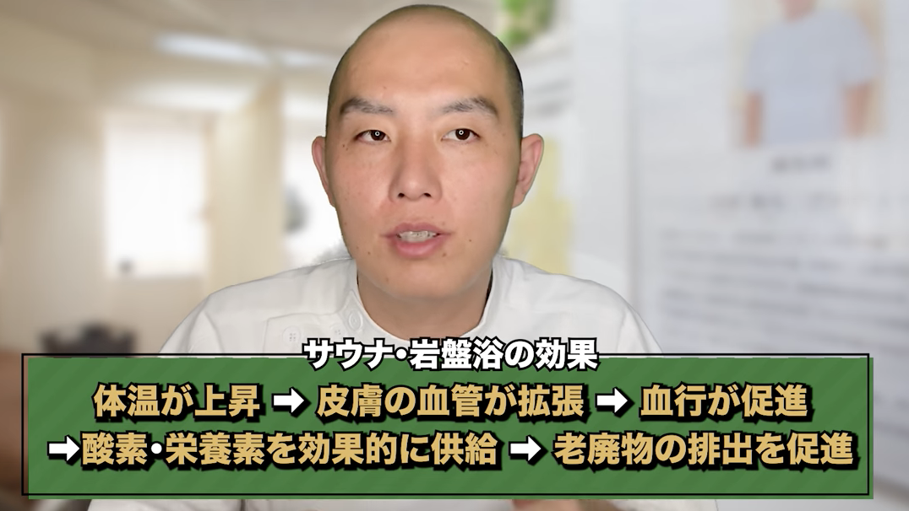

自律神経失調症の鍼灸
交感神経と副交感神経のバランス崩れによる不眠・倦怠感・めまい・胃腸不調を、体と神経の両面から整える解説。
院長YouTube解説・関連動画
 ▶ YouTube
▶ YouTube【自律神経失調症】が劇的に整う！鍼灸治療の効果とは！？
脳の機能と体の不具合の両面から自律神経を整えていく鍼灸施術の考え方を解説している動画です。
動画を見る（YouTubeへ） →▶ 関連する院長YouTube動画をもっと見る（あと1本）▼

自律神経失調症とは

自律神経失調症は、生活リズムの乱れやあらゆるストレスなどが原因で起こる心と体の病です。
そもそも自律神経とは、人間の生命活動のバランスを整えている神経です。
呼吸、心拍、血液循環、消化吸収など、生きるために必要な生理現象をコントロールし、身体のほぼすべての器官が、自律神経の関与を受けています。
交感神経 ⇒日中に活発。《脳の活性化、気管支拡張、心拍数増加、血管収縮、血圧上昇、胃腸運動抑制、発汗促進などをコントロール》
副交感神経 ⇒夜に活発。《脳の鎮静化、気管支収縮、心拍数減少、血管拡張、血圧低下、胃腸運動促進、発汗抑制などをコントロール》
このように交感神経と副交感神経がバランスよく働き、2つの神経の役割分担をさせることで、毎日を健やかに送っています。
ところが
- •昼夜逆転の生活
- •過度なストレスによる睡眠障害
などにより、この2つの神経系が正常に作用しなくなります。
そうして心身のバランスを保てなくなることから、自律神経失調症にかかるのです。現代社会の荒波に揉まれ、毎日仕事で多忙な人は特に注意が必要です。
朝起きてもスッキリしない、日中は集中力が続かずすぐ疲れてしまう、ちょっとしたことでもイライラする、夜なかなか寝付けない、眠りが浅くて何度も起きてしまうなどの不調は生活の中で起こりがちです。不調が頻繁に起こると歳のせい、最近疲れが溜まっているだけ、と思うかもしれませんが、症状の多くは自律神経の乱れからきているのです。
自律神経が乱れると、交感神経が過剰に働くことによって心身の状態が常に緊張状態になり自律神経失調症を発症します。
自律神経失調症の特徴は、イライラしやすくなる、集中力が続かない、消化不良、疲れやすくなる、眠りが浅くなる、胃の不快感などです。
自律神経は全身を調整するため、一部分の調子の悪さが全て自律神経の影響ではありません。自律神経自体が勝手におかしくなることはなく、何か別の理由が原因で自律神経が左右されておかしくなっているのです。
当院では、脳からきているのか職場や家族、季節的のような外的要因なのか、内面やトラウマ、思いのような内的要因からきているのか色々な観点を見極めて施術しています。

自律神経失調症のまとめ20個

1.エンテリック神経の独立性
腸の神経は第2の脳とも呼ばれ、自律神経系の一部であり独立して消化管機能の消化液の分泌を調整しています。脳腸相関ともよく言われるように脳と腸は非常に綿密な関係を示しているのです。
2.ポストプランディアル低血圧
食後に血圧が急激に低下する現象で高齢者や自律神経失調症を持つ人に多く見られます。これは比較的ポピュラーな症状で、食後に気分が悪くなったり顔が青ざめる人はポストプランディアル低血圧が考えられます。
3.冷たい汗の突然の発生
体温調節に関わる自律神経の不調によって突然冷たい汗をかくことがあります。発汗作用を調整している自律神経がおかしくなることで何気ない時に急に汗をかくようになるのです。
4.ピサ症候群
体の片側が傾く症状で特に神経変性疾患との関連性が強いです。神経系の病気で自律神経失調症の症状と一緒に出てきます。
5.無意識のため息
無意識で頻繁にため息を吐くのは体内が自律神経のバランスをとろうとする反応だと考えられています。辛いことや辛い悩み、今の症状で悩んでいる人は交感神経が高ぶりがちです。
強制的に副交感神経に切り替えるために息を吐くように呼気の時間を長くします。深呼吸や座禅、瞑想する時に吐く方を意識しなさいとよく言われますが、副交感神経を優位にさせるために吐く方を長くすることで体をリラックスさせることができるのです。ため息をいう行動は体をリラックスさせるために最適なセルフケアです。
6.アントコリス（前傾首）
首が前方に曲がって顔が垂れる現象で特にパーキンソン病の人に見られます。自律神経失調症の人は交感神経優位の人が多いです。交感神経優位は首の前側腹筋が非常に硬くなって前傾姿勢になりアントコリスの状態になりやすいのです。
7.視覚と瞳孔反応の変化
交感神経が瞳孔を拡張させ、副交感神経が収縮するためバランスが崩れると視覚の問題が発生します。光に対する過剰な反応はコロナ後遺症の人に多く、視覚過敏光過敏といった悩みを言われることが多いです。
8.唾液と涙の分泌
唾液や涙の分泌を制御していてドライマウスやドライアイの症状が現れることがあります。
9.異常な発汗パターン
自律神経失調症は過度な発汗や汗が出ない状態を引き起こします。夏場は特に熱中症に注意が必要です。
10.消化不良と腹部の不快感
自律神経失調症が消化器系に影響を与えると消化不良や腹部の膨満感、不快感を引き起こします。自律神経に支配されている腸の動きが悪くなって起こる症状です。
11.ピュア自律神経不全
主に末梢神経系に影響を与える神経変性疾患の１つです。立ち上がった際に急激な血圧変化を経験します。自律神経単体で起こる神経変性疾患です。軽い病気で悩んでいる人はそこまで気にする必要はありません。
12.家族性自律神経失調症
自律神経系の機能不全を引き起こして体温調節の困難、血圧の不安定、発汗の異常を伴います。遺伝的要素があります。
13.シャイトラージャー症候群
多系統萎縮という病気の１つで起立性低気圧、膀胱機能障害、呼吸困難の症状を引き起こします。
14.コートハンガー痛
肩や腰の後ろに特有の痛みを呈します。長時間の立位や低血圧によって血流が制限されることが原因とされます。自律神経と脳は密接に関係があるためハンガーの部分に凝りが生まれるのです。
15.自律神経の感覚の調整
このバランスが崩れると感覚の問題が発生します。よく何もしていないのに急に痛くなったり急に足がざわざわしたり手がむずむずするというような色々な症状を出してしまいます。
16.体温調整の困難
発汗や血管拡張、収縮の異常によってやイオン調整に影響を与えて暑さや寒さの耐性が低下します。熱中症を引き起こしやすくする原因になります。
17.思い込みの問題
自律神経がおかしくなると見えないものが見えたり聞こえない音が聞こえるなど思い込みが強くなります。幻聴や幻覚は自律神経系からくることがあるのです。
18.ファイトオブブライト堪能と遺伝的影響
交感神経系の闘争反応は遺伝的要因によって影響を受けることが研究で示されています。東洋医学では陽性体質ともいい、体が興奮しやすい人やそれに伴う症状胃潰瘍、便秘気味などそういう人は注意が必要です。
19.心拍変動解析
心拍の変動は自律神経系のバランスを測定する重要な指標です。よくH R Vとも言われます。高いH R Vは健康な自律神経系を示して低いH R Vはストレスや自律神経失調症の兆候を示します。
20.黒のタイプと自立神経の違い
人間のクロノタイプ（朝型、夜型）は自律神経系に影響を与えます。朝型の人は副交感神経の活動が早朝にピークを迎え、夜型は夜遅くにピークを迎えます。
クロノタイプのミスマッチが自律神経失調症のリスクを高めるのです。基本的に多くの人は朝型の生活を強いられますが、本来夜型のタイプの場合はミスマッチが起こってなかなか元気が出ないこともあります。これは自分の体質、クロノタイプを理解する必要があります。
体や脳のリラックス法８選
体や脳をリラックスさせる方法はある程度決まっています。その決まった方法の中で1番リラックスする方法を探し、リラックスできる機序を知ることで自分に合ったリラックス方法を探すことができます。

🎥 他のYouTube切り抜き・解説を読む（あと2件）▼
①温泉やお風呂に浸かる
お風呂や温泉に浸かることで、体温が上昇して血管が拡張することで末梢血管抵抗が低下して心臓の負担が軽減します。
温熱刺激は副交感神経が活性化することで交感神経が抑制されることで心拍数が低下してリラクゼーション効果があります。

②十分な睡眠を取る
ノンレム睡眠時に成長ホルモンが分泌されることで細胞の修復、再生が促進されます。
この過程で体内の代謝物が除去されて脳脊髄液の流れが改善し、脳の解毒作用が働きます。
睡眠によって交感神経活動が低下し、副交感神経が優位になることによって心拍数血圧が低下して体全体のリラックス効果が得られるのです。
・アミドロベータ
アミドロベータは神経細胞で作られて細胞外に放出されるタンパク質です。アルツハイマー病で悩んでいる人の脳では処理されて脳に蓄積し、老人斑と呼ばれるゴミの塊を形成します。老人斑がたまることで神経細胞が傷ついてやがて死滅し、脳の機能障害が起きるのです。
アミドロベータは健康な神経細胞にまとわりついて毒素を放出させ神経細胞やシナプスを傷つけ死滅させることで、脳が萎縮しアルツハイマー病や認知症が発症、進行します。
睡眠中は脳脊髄液がどんどん流れるため、アミドロベータを流すことによって脳が解毒されアルツハイマー病の予防にもなります。
・タウタンパク質
タウタンパク質はアルツハイマー病などの様々な神経変性疾患で、脳に蓄積して神経細胞を死滅させ、認知症の原因になります。タウタンパク質は細胞構造が作る微小管という繊維で結合されシナプス間の神経伝達を低下させることがわかっているのです。
脳の解毒作用が必要で、睡眠を取らないと神経変性疾患につながりやすいため深い睡眠をどんどん促すことが大事です。

自律神経を整えるためにはリラックスするだけではない
自律神経を整えるためにはリラックスするだけではありません。意図的に体を緊張させることで交感神経と副交感神経のバランスを取り戻すことができます。
自律神経とは体のあらゆる機能を自動に調整する神経システムで交感神経と副交感神経の2つから成り立っています。
交感神経・・・活動的な状態を保つために働きます。心拍数を上げたり血流を増やしたりします。
副交感神経・・・体をリラックスさせるために働きます。消化や回復を促進させるために働きます。
この2つがバランスよく働くことが心身の健康に非常に重要です。現代社会ではストレス過多や不規則な生活によって自律神経のバランスが乱れる人が増加しています。
仕事や家庭のストレスやスマホの見過ぎなどで交換神経を優位にしている一方で、過剰なリラクゼーションが副交感神経を過剰にしてしまう副交感神経優位症状の人も多いです。
副交感神経優位症状になると体が怠けた状態になり、疲れやすさ、集中力の低下、慢性疲労につながります。
筋肉の緊張が交感神経を刺激し、副交感神経とのバランスを取り戻すきっかけになります。ポリヴェーガル理論では体が適度に緊張、弛緩を繰り返すことで心と体がより効率的にストレス処理できると言われています。
体を適度に緊張させると筋肉にかかる刺激が脳に信号を伝達する交感神経が活発になります。交感神経が活発になると自律神経がリセットされます。交感神経を意識的に使うことによって副交感神経がバランスを取り戻しやすくなるのです。
軽い運動やストレッチのあと体がスッキリするのは、体を動かして筋肉を緊張させることで交感神経が働き自律神経がリセットされているためです。この緊張と弛緩の切り替えを繰り返すことが、心身のリフレッシュと集中力やエネルギーの回復に役立つのです。
体を効率よく緊張させる方法はプログレッシブマッスルリラクゼーションと言います。全身の筋肉を意図的に緊張させた後に一気に力をぬくセルフケアで、手を強く握りしめて5秒間キープしてから力を抜くという動作を全身の筋肉で行います、
この簡単な動作を数回行うだけで自律神経がリセットされてリラックス効果が得られます。
自律神経を調整する「最高の緊張には最大のリラックスが生まれる」という整体の格言があります。鍼灸でも「陽極まれば陰となる」と言う格言があります。これは頑張る状態（陽）を続けると力を抜いた時にリラックスする（陰になる）と言う意味です。東洋医学や西洋医学でも同じような言葉があるのです。
自律神経を整えるドリンク
自律神経の乱れを改善させるためには生活習慣全般を見直すことが必要です。しかし、何から初めていいかわからないことも多いと思います。
オススメなのが朝に自律神経を整えるためのドリンクを1杯飲むことです。朝は交感神経が昂って1日のスタートを切る大切な時間です。このタイミングで適切な栄養素を含んだドリンクを摂取することで自律神経のバランスが整って1日安定します。
朝に自律神経を整えるドリンクを取り入れることで、
・1日エネルギッシュに過ごせる
・ストレス耐性が上がる
・質の良い睡眠が取れる
・胃腸の調子が良くなる
・長期的な体質改善
などさまざまなメリットがあります。
血糖値を安定させることで脳に必要なエネルギーを供給することができ、午前中の集中力、パフォーマンスが必ず上がります。自律神経に大きく作用してくれるため、ストレスに強い体を作って不安を感じにくくなるのです。
また、朝から副交感神経に刺激することもできるため、夜になると自然にリラックスした状態になりやすくなり寝つきも良くなります。さらに食物繊維も豊富なため、消化器官の働きも安定して食べ物の消化吸収がスムーズになります。
このドリンクを毎日重ねて飲むことで、交感神経と副交感神経の切り替えがスムーズになって慢性的な疲労感やストレスを感じにくい体質になります。
院長も4年間飲んでいます。8時45分から夜中の11時まで働いており、ご飯も立ちながら食べているため腹持ちの良い成分でエネルギー補給に適した飲み物でないと体がもたないのです。自律神経がなかなかうまく調整できない人やハードワークの人にはオススメの飲み物です。
自律神経を整えるツボ
調子が悪い人の大体は自律神経の調整がうまくいっていません。自律神経は意識下のコントロールが及ばない体の機能を持続的に調整する神経系のことで、交感神経と副交感神経で成り立っています。
交感神経は戦うか逃げるかに関する反応を制御しており、ストレスや危険性があるときに心拍数の増加や血圧の上昇、呼吸数の増加、筋肉の血流増加などを起こします。交感神経は活動するときに働く神経で主に緊急時に備える働きをしてくれるのです。
副交感神経は休息と消化を行います。リラックスをしているときや食後に活性化し、心拍数や呼吸を落ち着かせ、消化活動を促進し、エネルギーを蓄える反応を引き起こします。
交感神経と副交感神経は一緒に相互に作用するため、交感神経が高まると副交感神経は落ち着き、副交感神経が高まると交感神経が落ち着きますl。
自律神経の不良はストレスや睡眠不足、不規則な生活習慣によって引き起こされますが、1番の問題は体に症状を起こしたり精神的な症状を引き起こすことがあることです。不安障害やめまい、耳鳴りや不眠症、自己免疫疾患、アトピー性皮膚炎、逆流性食道炎など様々な病気を生みやすくなります。
よく勘違いをしている人がいますが、自律神経は歪むことはありません。当院に来院される方にも自律神経が歪んだ、おかしくなったという人が多くいますが、今の環境や精神状態によって自動調整されるため歪んだりおかしくなることはないのです。
やりたいことがあるときや頑張りたいとき、リラックスしたいときに上手く合わせられなくなることが問題で、TPOに合わせられなくなっている状態こそが自律神経が不安定になっている証拠です。
自律神経を自分の感情に連動させるために以下の2つのツボを10秒間強い力でぐりぐり押すことをお勧めします。
曲池は、肘を曲げたときに外側にできるシワの端にあり、肘関節の骨のキワの先端あたりをグーっと押すと非常に痛みを感じます。
ツボを押すときのポイントは強く押すことです。当院では曲池に鍼を行いますが、セルフケアとして自分で調整する場合は痛くて若干冷や汗が出るくらい押しましょう。
人間は最高の緊張から最大のリラックスが生まれます。体を物理的に緊張させなければリラックス効果が出ません。人差し指でも中指でも親指でも良いので曲池を真上からまっすぐ押すことで自律神経に作用させることを意識しましょう。
非常に痛い場所ですが、我慢して押すと手の先まで響くほどの痛みがあると思います。その場所を1日3回10秒間頑張って押しましょう。
横を向くと真横に骨が見える茎状突起から指を後頭部に動かすと凹んだ部分があります。そこが風池です。そこを強く押しましょう。凹んだところに親指を入れてまっすぐ内側に向かって押すことを意識します。
左右両側をそれぞれ10秒間押します。1日3回行うと良いです。
1.精神的な病気ではない
自律神経は体内で無意識に働く心拍数や血圧、体温調節をコントロールしているため、乱れるとめまいや動悸、不安感、疲労感が現れます。この状態はこころと体だが互いに大きく影響しあってあらわれる機能的な障害であり、精神的な病気と同一視するのは誤解です。
ただし、長期間放置することで、症状によって不安感や抑うつ感、疲労感が増すことで結果として精神的な問題を引き起こすことがあります。大切なのは体の不調を早めに認識して適切な対処をすることです。
2.原因はストレスだけ
確かにストレスは自律神経失調症の大きな原因の1つではあるがそれだけではなく、ホルモンバランスの乱れや睡眠不足、不規則な生活習慣、環境要因、感染症後の体調不良など様々な要因が絡み合っています。
月経や更年期障害によるホルモンの変動、長時間のデスクワークや運動不足による血中障害、コロナやインフルエンザによる後遺症症状、体がおかしくて起こる脳過敏症状などの要因があるのです。ストレスの解消だけではなく生活全般の見直しが大事です。
3.特定の薬や漢方で完全に回復する
自律神経失調症に対する薬は一時的な症状の緩和には有効ですが薬だけで根本的に改善することはできません。自律神経失調症は生活習慣や環境要因が密接に関わっているため、不規則な睡眠や運動不足が原因の場合、これらを改善しなければ再発する場合があるのです。原因を改善しなければ薬や漢方を一生懸命取っても再発してしまいます。
薬はあくまで補助的な手段であり、並行してストレスの管理や適度な運動、食生活の改善を行うことが重要です。
4.調べることで確実に判断できる
自律神経失調症は血液や画像で見て直接確認することができません。多くの病院では症状や生活背景を総合的に評価して判断します。
頭痛や動悸、めまいや耳鳴り、疲労感など症状が複数ある場合、自律神経失調症の疑いがあると言われます。その後血液を調べたりカウンセリングを行ったりして自律神経が原因であるであろうと判断をし、漢方などの処方をすることになります。病院へ行ってもなかなか適切な対処をしてくれるところがないため鍼灸や整体にいらっしゃる方が多いです。
5.女性特有の病気
自律神経失調症は女性に多いと思われがちですが男女共通の病気です。男性は仕事のプレッシャーや生活習慣の乱れが原因になることが多いです。女性の場合はホルモンバランスと三半規管からくる前庭神経障害が原因のことが多いです。女性の場合は子宮と乳房があるため男性よりも前傾姿勢になりがちです。そのため首の前側が張りやすくそれが原因で耳の内耳の三半規管の問題が強く出てくるのです。そのため男性より女性の方が耳鳴りやめまいで悩む人が多いです。
特に妊娠や更年期などのライフイベントに関係してホルモンバランスにより発症することもありますが、ある程度年齢を重ねてくると性別に関係なく発症します。
6.放置しても自然に改善する
自律神経失調症が軽症の場合は生活習慣を見直すことで自然に改善することがあります。慢性化した場合は難しく、原因が複雑であることが多いです。これは放置しても改善しないことがほとんどで、さらに症状が長引くことで体や神経に負担がかかります。
それにより当初2つくらいの原因が3つ4つ5つというようにどんどん増えていき悪循環に陥ることがあります。自律神経失調症が慢性化した場合、発症している状態が通常になってしまうことがあり、逆流性食道炎や下痢便秘、慢性的な足の冷えなど普通に生活しているだけでも体の症状が出てきます。
7.ヨガや呼吸法だけで改善する
ヨガや呼吸法は自律神経を整えるための有効な手段ですが、それだけで全ての症状を改善できるわけではありません。副交感神経を活性化させリラックスを促進するのに効果的ではありますが、根本の原因である生活習慣やストレス環境が改善されなければ再発します。ヨガや呼吸法は非常に効果的なため、補助的な手段と考えて全体的なアプローチが重要です。
8.食生活は関係ない
食生活は自律神経の働きに大きく影響します。自律神経の機能にはエネルギー供給が不可欠であり、ビタミンB群やマグネシウム、オメガ3脂肪酸が非常に重要です。この3つの栄養素は神経伝達物質の合成や神経をリラックスするのに関与しており、ビタミンB群が不足してしまうと神経の修復機能が低下してしまい、不安感や疲労感を引き起こす可能性があります。
一方、過剰なカフェインや糖分の摂取は交感神経を過剰に刺激させ、自律神経を乱す原因になります。さらに、人による合う食べ物と合わない食べ物があり、理想的な食事をとっていてもその人に合わない食物や食べ方で自律神経失調症を引き起こしてしまいやすくなるため、自分に合った食事をすることが自律神経を整える基本です。
9.症状が出なければ改善した証拠
症状が一時的に緩和しても根本的な原因が解消されていない場合は再発します。外因と内因を意識しましょう。外因は外からストレス、内因は内からくるストレスです。意識下で判断する必要があります。
幸せだと感じるような現状でなければ症状はいつでも再発するのです。自律神経は自動調整されるため、一時的に症状がなくてもいつでも再発してしまいます。少しでも幸せだと感る状況、環境、気持ちでいないと難しい症状なのです。
10.運動は必ず良い
運動自体は自律神経を整えるために有効ですが体調によっては逆効果になることもあります。特に激しい運動は交感神経を過剰に刺激してしまうため、症状を悪化させる可能性があります。心拍数が急激に上がるランニングや高強度トレーニングは体に負担をかけることがあるのです。運動でも仕事でも追い込んでしまう人は自律神経が偏ってしまいます。程々が1番です。
11.全て心因性の症状
心因性だけではなく消化器や内臓の機能低下、筋肉の緊張、ホルモンバランスの乱れが大きく影響します。心因的なストレスは症状を悪化させる要因にはなりますが、体の不調が原因で心に影響を与えるケースが多いです。自律神経失調症を改善するには体の状況が不可欠で体が良くなれば気持ちも上がります。心と体の両方見る必要がありますが、まずは自分の体を改善するように心がけましょう。
12.一生改善しない
自律神経失調症は一生改善しないことはありません。複数原因があっても原因が改善すれば必ず落ち着きます。状況が良くなっても症状はゆっくり落ち着いていくため、体が良くなった時と症状が良くなる時にタイムラグが生じます。そのため理解していなければ施術を行っても良くなっていないと思ってしまいます。
体が良くなると自律神経も落ち着くため、セルフケアや生活の見直しは必ず行わなければいけません。症状が悪くてもやり続けることが必要です。希望を持って改善に取り組むことが重要なのです。
13.すぐに改善する
すぐ改善する人は原因が1個だったり軽症の人がほとんどです。当院ではよく症状の根が浅かったという話をします。症状の根が深いとすぐ改善するというよりは時間をかけてゆっくり落ち着いていくというイメージです。
症状の根が深い場合は改善したというリアクションをする人はほとんどおらず、忘れてしまいます。辛かった状態から良くなるまでのスピードが遅いため、いつも間にか症状がなくなり良くなるケースがほとんどです。よくなってくると忘れてしまうため施術することすら忘れてしまうのです。焦らずじっくりセルフケアに取り組むことが大事です。一時的でなく根本的な改善を目指しましょう。
14.マッサージや整体で完全に回復する
筋肉の緊張を一時的に緩和させるため症状を和らげる効果があります。自律神経失調症の根本的な改善には生活習慣やストレス管理、環境が不可欠です。
マッサージの後に生活が変わらなければ再発してしまいます。また、背骨を整えて生活しやすくなれば環境を変えやすいこともあります。改善法は補助的な手段で自分の人生や生活習慣を変える必要があるのです。
15.精神的に弱い人がなる
自律神経失調症は性格、精神的な強さは全く関係ありません。誰にでも発症する可能性があります。環境要因が非常に重要で、どんなに精神的に強くても過労や睡眠不足、栄養の偏りで発症してしまいます。精神面の誤解があると自分を責めたり、周囲から理解を得られなかったりするため正しい知識の共有は重要です。自分を責める必要はありません。
16.遺伝だから仕方ない
遺伝的な要因が関与する場合もありますがそれだけが全てではありません。環境や生活習慣が大きな影響を与えることが多いです。夜型で生活している、しょっぱいものをたくさん食べる、コーラばかり飲むというというような家族の食生活習慣が問題のケースが多いです。この環境や行動を見直すことが遺伝的なリスクの軽減につながります。
自律神経失調症は正しい知識と改善法で改善できます。誤解に惑わされずに生活習慣やストレス管理中心に取り組むことでより快適な生活を送ることができます。
当院ではストレッチやマッサージは禁止しています。いかに脳を落ちつかせられるか、いかに睡眠が取れるかが大事です。食べるものセルフケアもその辺りを重要視することで自律神経失調症は必ず良くなります。
自律神経の乱れを改善するカイロの正しい貼り方
当院でも冷え性、自律神経の乱れに悩んでいる人は多いです。特に寒い季節になると手足が冷たくて辛い、夜寝る時布団に入ってもなかなか暖まらず寝れない、寝つきが悪い、などの症状は誰もが1度は経験しているはずです。ストレスが溜まりやすく体調の波が激しくなってくる人も多く、これらの症状は単なる不快感にとどまらず日常生活に大きな影響を与え、集中力やパフォーマンスが低下します。
改善のために誰でも手軽に行えるセルフケアがあります。カイロです。ここでは、鍼灸師の視点から冷え性だけでなく自律神経の乱れまで改善するカイロの正しい貼り方について解説します。
冷え性は、血流が滞り体温調節がうまくいかない状態のことです。特に女性に多く、手や足が冷たくなります。ひどい場合は体全体が冷たくなることもあります。冷えが続くと体の他の部分にも悪影響が出ます。消化不良や腹痛、免疫力の低下で風邪をひきやすくなったり自己免疫疾患を発症したりします。冬になり寒くなったり肌荒れしたり湿疹ができたりする人も多いでしょう。
自律神経の乱れは、自律神経という体内の様々な機能を調整する神経が、ストレスや疲れが溜まることでバランスが崩れ、気持ちが不安定になったり睡眠の質が悪くなったりイライラしたり様々な不調が現れることです。
冷え性も自律神経の乱れも簡単に改善しないと思われています。しかし、カイロで改善する可能性があります。カイロには科学的にも証明された効果があり、温熱療法という方法でよく使われています。温めることで体の血流を促進させ、神経や筋肉の緊張を和らげる効果があるのです。
特にカイロのように局所的に温めることによって血流が良くなったり、冷えや痛みの根本的な原因を改善することができます。カイロを腰に貼って内臓を温めることで全身の血流が改善され、冷えが原因で起こる消化不良や便秘、ホルモンバランスの乱れを改善することも期待できます。
首の後ろにある延髄、首の前側にある星状神経節、脊髄の胸椎にある交感神経系などに温熱刺激を与えるとストレスを軽減してリラックス効果を得ることもできます。これはカイロの温熱効果が副交感神経を活性化させることで体をリラックスさせる状態に導くからです。
自律神経のバランスを整えるツボ
多くの人が抱えている悩みの大きな原因は自律神経の不調です。自律神経は心臓を動かし、呼吸を整え、消化をコントロールし、体温や血圧を調整する、いわば体内のオーケストラの指揮者です。
ストレスや不規則な生活、情報過多、長時間のスマホなどの現在の生活環境はオーケストラの指揮者を大混乱させています。その結果、全身の楽器がバラバラに鳴り響いてしまい心も体の不調だらけになるのです。
自律神経にはアクセル役の交感神経とブレーキ役のの副交感神経があります理想のバランスは、昼間はアクセル、夜はブレーキです。しかし、現代人は夜でもスマホを見続け、SNSや仕事での不安を抱え、交感神経が切れないまま過ごしています。その結果体がずっと緊張状態で寝ても疲れが取れない状態になるのです。肩や指が凝る、頭が締め付けられるように痛いなどの症状は、全部自律神経が乱れているサインです。
自分の手で整える方法があります。それは3つのツボを押すだけです。ツボを押すと痛いのですが、この痛みこそが効果のサインになります。
ツボを押すことで筋肉や血流神経が刺激され、脳の中枢へ信号が伝わります。研究でも、ツボへの刺激が心拍変動を改善して副交感神経を高めるという研究結果があります。ツボ押しは体の奥深くでアクセルとブレーキの切り替えを助けてくれるのです。
交感神経優位だけでなく「副交感神経優位症状」にも着目
銀座そうぜん鍼灸院の臨床解説では、不眠・動悸・めまいといった交感神経過緊張だけでなく、運動不足や過度の脱力に伴う副交感神経優位症状（倦怠感・抑うつ感・集中力低下）も重視しています。
慢性的な不調（「根が深い」状態）では、体のコンディションが整ってから自覚症状が消えるまでにタイムラグが生じることが多いため、体表やお腹のサインを見極めながら、鍼灸・温熱（仙骨・第7頸椎裏・内関など）・生活リズム調整を組み合わせて緩やかに安定化を目指します。
自律神経失調症に用いられる代表的な8つのツボ

📌 詳細データ・ツボ一覧表を開く▼
| ツボ名（経穴） | 位置の目安 | 主な狙い・役割 | セルフケアの注意点 |
|---|---|---|---|
| 曲池（きょくち） | 肘を曲げたとき外側にできるシワの端 | 交感神経の過緊張リセット、頭部・上肢の熱感緩和 | 1日3回・10秒ほどしっかり圧迫。痺れが出たら弱める |
| 風池（ふうち） | 後頭骨下縁、耳後ろの骨（乳様突起）の内側のくぼみ | 頸部緊張・頭痛・めまい・眼精疲労に伴う自律神経の乱れ | 親指で斜め内側へ10秒。首の前側（頸動脈）は押さない |
| 内関（ないかん） | 手首の内側横ジワ中央から肘側へ指3本分（2寸） | 動悸・息苦しさ・吐き気・胃腸不調の緩和、迷走神経調整 | 衣類の上からのカイロ温熱や軽い指圧が安全で効果的 |
| 百会（ひゃくえ） | 両耳上端を結ぶ線と正中線が交わる頭頂部 | 頭重感・不眠・精神的緊張の緩和、のぼせ調整 | 中指の腹で心地よく数秒押圧。頭痛悪化時は中止 |
| 角孫（かくそん） | 耳を前に折ったとき先端が側頭部に当たる位置 | 側頭部の循環改善、締め付け頭痛・むくみ・だるさ緩和 | 吐く息に合わせてじわっと圧迫（強揉みは揉み返しに注意） |
| 球後（きゅうご） | 目の下の骨の縁（外側1/4付近のくぼみ） | 眼精疲労・脳疲労のリセット、夜のリラックス・入眠促進 | 眼球を直接押さない。骨の縁に沿って指腹で優しく |
| 井穴（せいけつ） | 手足の指の爪の生え際から約2mm下の両脇 | 過緊張・不安・ほてり・ホットフラッシュの瞬間リセット | 爪周囲炎・糖尿病性神経障害がある場合は回避 |
| 三陰交（さんいんこう） | 内くるぶし頂点から指4本分上、すねの骨の後ろ際 | 冷え・ホルモンバランス（更年期・月経不順）・睡眠の質改善 | 妊娠中の強い刺激・お灸は禁忌 |
査読論文が示す「自律神経（HRV・迷走神経）×鍼灸」の科学的エビデンス
国際医学研究では、心拍変動解析（HRV：全体の自律神経適応力を示すSDNN、副交感神経指標のHF、交感・副交感バランスのLF/HF比）を用いて鍼灸の自律神経調整作用が検証されています。
📚 査読論文データ・出典表を開く▼
| 年・研究デザイン | 対象・規模 | 主な結果と臨床的意義 | 限界・出典 |
|---|---|---|---|
| 2025年 メタ解析 | 自律神経不調を伴う疾患 10 RCTs（計744名） | 全体適応力指標SDNNが有意改善（MD 13.59, p=0.0091）。有害事象は軽微のみで重篤例ゼロ。 | LF・HF・LF/HFは有意差なし、異質性高。Front Neurosci (PMID: 41230507) |
| 2023年 メタ解析 | 手技鍼 vs シャム鍼 9 RCTs | 実鍼群でのみ施術前後のHF（副交感神経）およびLF/HF比が有意変化、シャム群は有意変化なし。 | 一次研究の質・異質性にばらつきあり。Complement Ther Med (PMID: 36494036) |
| 2024年 RCT | 食後愁訴症候群（PDS）解析51名（週3回×4週） | 胃腸症状反応率（p=0.001）、迷走神経活性HF上昇（p≤0.001）、LF/HF低下（p≤0.001）が有意改善。 | 単施設・小規模。脳腸相関の根拠。Chin Med (PMID: 39568071) |
| 2022年 国内RCT | 更年期女性 48名（日本式鍼7穴×4週 vs シャム） | 鍼群の79%で心拍数が5%以上低下（P<0.01）、鍼中のHF上昇・起立時LF/HF低下・更年期症状軽減を確認。 | 更年期女性限定・4週間の短期評価。Med Acupunct (PMID: 36311889) |
| 2018年 国内生理試験 | 健常成人男性 25名（手三里への深刺） | 施術中のHR低下・HFnu上昇・LF/HF低下を確認し、施術後もLF/HF低値が持続。 | シャム対照なし・健常者対象。Med Acupunct (PMID: 29682149) |
| 2025年 国内臨床検討 | 頭痛と自律神経機能の検討（現代鍼灸学） | 側頭筋部への鍼通電でLF/HF比の低下と疼痛軽減を確認し、交感神経過活動の抑制を考察。 | 症例提示はn=1の総説的検討。J-STAGE |
セルフケアの注意点と、病院受診を最優先すべきサイン
悪化を防ぐ生活上のポイント
- 不調期にマッサージ・強いストレッチ・激しい運動を控える：心拍数が急上昇する高強度運動や揉みほぐしは交感神経を刺激して逆効果になりやすいです（公式解説）。
- 感染後・炎症性タイプへの筋弛緩法（PMR）は禁止：コロナ後遺症・慢性疲労症候群由来では意図的な筋緊張セルフケアを行わないでください。
- 温熱ケアの活用：仙骨・第7頸椎裏・手首（内関）を衣類の上から優しく温める習慣が安全です。
⚠ 内科・循環器科・脳神経内科・心療内科の受診を最優先すべきサイン
強い胸痛・圧迫感・失神・脈の激しい乱れ、突発する激痛や片側麻痺・ろれつ困難、急激な体重減少や手の震え（甲状腺疾患等の疑い）、排尿障害や歩行障害、食事や睡眠がほぼ取れない状態や希死念慮がある場合は、速やかに専門医療機関を受診してください。
参考文献・出典
- 銀座そうぜん鍼灸院「自律神経失調症の鍼灸【整える方法・ツボ・症状の解説】」
- Ma et al., Front Neurosci (2025) — PubMed PMID: 41230507
- Hamvas et al., Complement Ther Med (2023) — PubMed PMID: 36494036
- Fu et al., Chin Med (2024) — PubMed PMID: 39568071
- Kouzuma et al., Med Acupunct (2022) — PubMed PMID: 36311889
- Uchida et al., Med Acupunct (2018) — PubMed PMID: 29682149
- 菊池友和『現代鍼灸学』25(1):33–37 (2025) — J-STAGE
よくある質問（FAQ）
Q. 精神的な弱さが原因なのでしょうか？▼
Q. 病院の検査で異常なしと言われましたが診てもらえますか？▼
Q. マッサージや強い運動をすれば良くなりますか？▼
あわせて読まれる関連疾患（特に対応することが多い症状）
感染後に長引く倦怠感・ブレインフォグ・嗅覚障害・自律神経症状に対し、全身の自己回復力を引き出す施術解説。
脳の過剰興奮による聴覚過敏・頭鳴り・めまい・片頭痛に対し、筋肉・神経・内臓の乱れから脳を鎮める鍼灸解説。
肘の内側での尺骨神経圧迫による小指・薬指のしびれに対し、前腕の深層筋を緩め神経再生を促す施術解説。
30歳以上の女性の約4人に1人にみられる子宮筋腫に対し、骨盤内の血流と自律神経バランスを整える施術解説。
吸入薬で止まらない長引く空咳に対し、自律神経・気管支神経の興奮と逆流性食道炎の視点から整える施術解説。
首・鎖骨・胸まわりでの神経圧迫による腕や手のしびれを、斜角筋・小胸筋などの深層筋鍼灸で解放する解説。
おひとりで悩まず、まずはご相談ください
銀座本院・川口・大宮・横浜・博多・田無の各院でご予約を承っております。